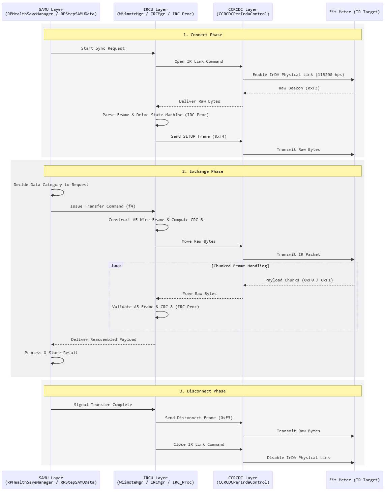
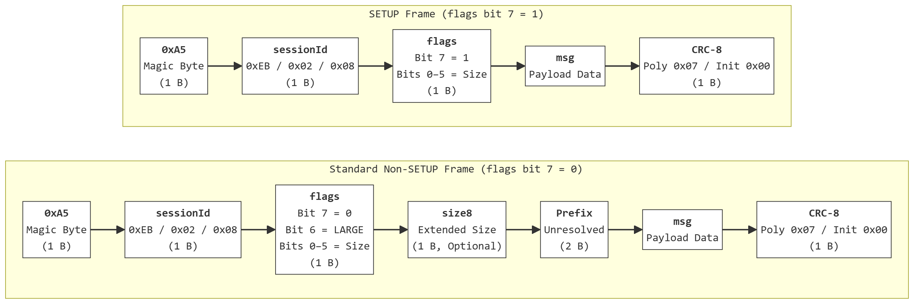
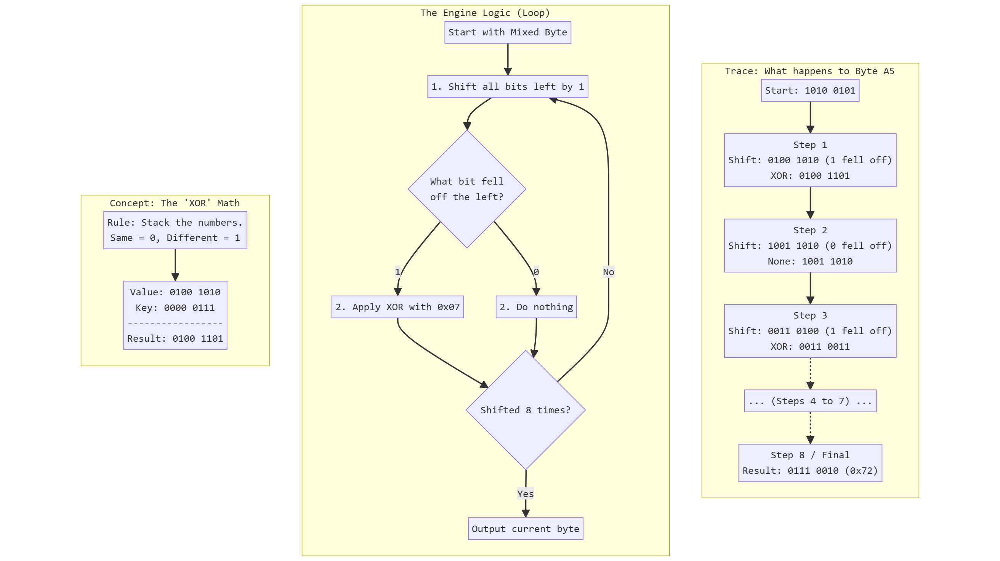
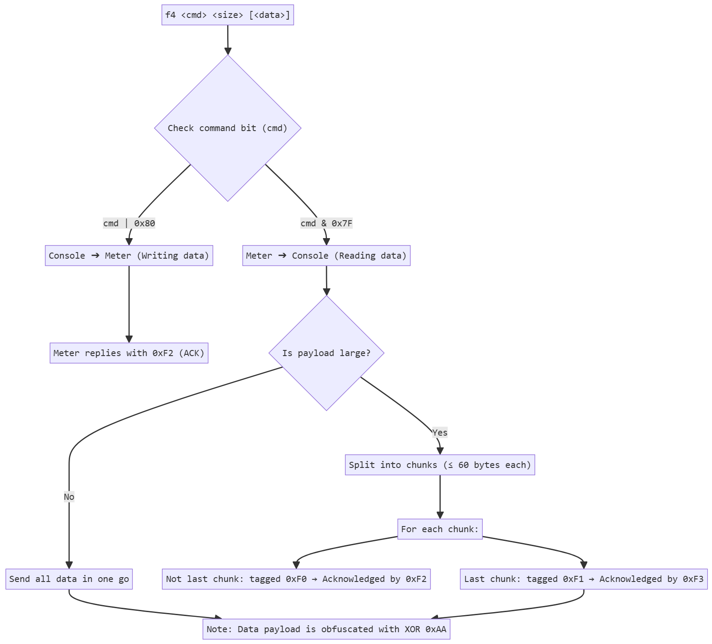
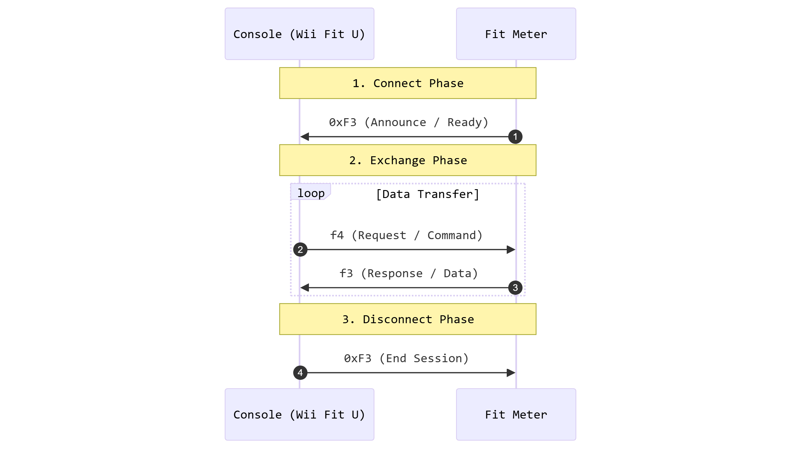
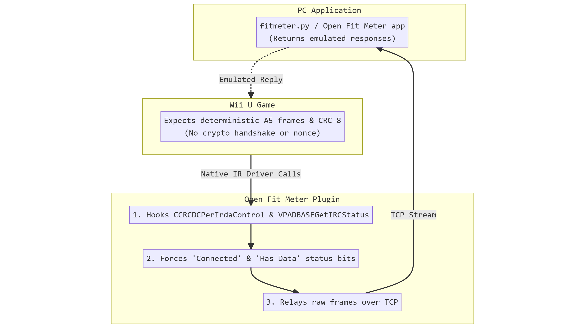

Last updated: October 2026
Open Fit Meter was made by me (L-DEV31) using Ghidra, VSCode and Android Studio as well of a shit ton of documentation, github repos, and sleepless nights.
Although OFM was human made, AI were used to guide me beyond steps in which i was stuck.
To communicate the fit meter sends data over the infrared (IrDA-SIR) port on the GamePad at 115200 bps
The communication is split into three discoverable layers:
| Layer | What it does |
|---|---|
| CCRCDC | Low-level IR driver. Opens/closes the IR link and moves raw bytes (CCRCDCPerIrdaControl). |
| IRCU | A Wiimote-style rendezvous/state machine (WiimoteMgr / IRCMgr). Drives connect → exchange → disconnect and parses incoming frames (IRC_Proc). |
| SAMU | The game's business logic (RPHealthSaveManager / RPStepSAMUData). Decides what data to ask for and stores the result. |

Every IR message is:
A5 <sessionId> <flags> [<size8>] <2-byte prefix (semantics unresolved)> <msg> <crc8>
Every IR message is sent in an A5 frame. It comes in two versions: a short SETUP frame to connect, and a Standard frame to transfer data.
0xA5: Start byte marking a new packet.sessionId: Sender ID (Console or Fit Meter).flags: Tells the packet type and data size.prefix: Extra 2-byte header (standard frames only).msg: Main data content.CRC-8: Final byte to check for transmission errors.
What it is. A CRC-8 is a 1-byte fingerprint of a message. The sender computes it and appends it to the frame. The receiver recomputes it on what it received. If the two values differ, a bit was corrupted in transit and the frame is dropped.
The math. Treat the message bits as the coefficients of a polynomial \(M(x)\) over \(\mathbb{F}_2\) (arithmetic where \(1+1=0\), so addition is XOR). The CRC is the remainder of a polynomial division:
\[ \mathrm{CRC}(M) = \big(M(x)\cdot x^8\big) \bmod G(x) \]Here \(G(x)\) is the generator polynomial. Open Fit Meter uses the polynomial 0x07:
The leading \(x^8\) is implicit, so only the low 8 bits 0x07 are written in code. The remainder has degree below 8, so it always fits in one byte.
The practical algorithm. Dividing bit by bit is what the loop in the code does. Start with \(c = 0\). For each message byte \(b\):
Shifting left multiplies by \(x\). When a 1 falls off the top, that is an \(x^8\) term, which the division replaces by \(x^2+x+1\), that is 0x07. After the last byte, \(c\) is the CRC.
How it is applied here. The CRC covers every byte of the frame from A5 up to the byte before the CRC. The sender appends the result as the last byte. The receiver can then run the same loop over the whole frame including the CRC: because there is no final XOR, a valid frame always gives:
Worked example. Frame A5 02 81 02 should give CA (the open-ack from case B). Byte 1, A5, with \(c = 0\):
\[ c = 00000000 \oplus 10100101 = 10100101 \]
| Step | c before | Top bit | Operation | c after |
|---|---|---|---|---|
| 1 | 10100101 | 1 | shift, then XOR 00000111 | 01001101 |
| 2 | 01001101 | 0 | shift only | 10011010 |
| 3 | 10011010 | 1 | shift, then XOR 00000111 | 00110011 |
| 4 | 00110011 | 0 | shift only | 01100110 |
| 5 | 01100110 | 0 | shift only | 11001100 |
| 6 | 11001100 | 1 | shift, then XOR 00000111 | 10011111 |
| 7 | 10011111 | 1 | shift, then XOR 00000111 | 00111001 |
| 8 | 00111001 | 0 | shift only | 01110010 |
After A5: \(c = \texttt{0x72}\). The other bytes work the same way:
| Byte | c before | c ⊕ byte | c after 8 shifts |
|---|---|---|---|
A5 | 00 | A5 | 72 |
02 | 72 | 70 | 57 |
81 | 57 | D6 | 2C |
02 | 2C | 2E | CA |
The final register is CA, which is the CRC byte at the end of the frame.

Legend: A5 sessionId flags size8 prefix opcode data crc8
| Case | Frame | Explanation |
|---|---|---|
| A. SETUP open meter → console | A5 00 84 01 03 04 EB F9 | Flags 84 = SETUP + size 4. No prefix. EB is the meter id. |
| B. SETUP open-ack console → meter | A5 02 81 02 CA | Flags 81 = SETUP + size 1. 02 is the console id. |
| B. SETUP close console → meter | A5 02 81 0F E9 | Same shape, data 0F closes the session. |
| C. Status meter → console | A5 EB 03 00 00 F3 33 | No data: size 3 = prefix (2) + opcode (1). F3 = ready, F2 = ack. |
| D. Request data console → meter | A5 02 06 00 1E F4 02 00 17 C1 | 02 = METs (bit 7 clear = request). 00 17 = 23 bytes wanted. |
| E. Send data console → meter | A5 02 06 00 07 F4 85 00 00 F0 | 85 = 80 | 05: bit 7 set = console sends calories. |
| F. Data chunk meter → console | A5 EB 0E 00 12 F1 A8 A8 AF AA A8 A8 B0 AA A8 AE AA DF | Size 0E = 14 = prefix + opcode + 11 data bytes. Data is XOR AA. |
| G. LARGE frame meter → console | A5 EB 40 7B 80 F4 F1 … 05 | Flags 40 = LARGE. Size = ((flags & 3F) << 8) | size8 = 123. |
Common misconception: 0x80 is not an opcode. It is the SETUP flag inside the flags byte (0x84, 0x81 above). The real application opcodes are 0xF1 to 0xF4 (SETUP/beacon, ACK, END, TRANSFER). Older notes listing 0x80/0x81 as commands misread the SETUP flag.
f4 with send-vs-request, chunkedAll data moves through the f4 frame:
f4 <cmd> <size:2 bytes BE> [<data>]
The cmd byte determines the direction:
cmd | 0x80 → console sends data to the meter. The meter replies with 0xF2 (ACK).cmd & 0x7F → console requests data from the meter. The meter sends chunks, and the console expects 0xF3 (END).Large payloads are split into chunks:
0xF0 = chunk (not last). Acknowledged with 0xF2.0xF1 = last chunk. Acknowledged with 0xF3.0xAA by the application layer (the decoder de-XORs it on the game side).
The console pulls exactly five data categories plus the Mii, each with its own cmd:
cmd | Content | Size |
|---|---|---|
0x02 | METs per minute | up to 10080 bytes |
0x03 | Height per minute | up to 10080 bytes |
0x04 | Activity tag per minute | up to 10080 bytes |
0x05 | Daily calories | 120 bytes |
0x06 | Daily steps | 120 bytes |
| — | Mii (0x60-byte FFSD) | 96 bytes |
The per-minute buffers cover 7 days × 1440 minutes = 10080 minutes. The daily buffers cover 51 day slots + 9 tail slots.
The rendez vous follows fixed roles:
f4 request, then waits for a single 0xF3 from the meter.
0xF3 frame to announce itself, then handles the console's f4 commands.
0xF3 to start, then a series of f4 requests and f3 responses, then a final 0xF3 to end.

The link is completely unauthenticated and unencrypted. The console never issues a cryptographic challenge, a nonce or a signed handshake. It is a deterministic request/response exchange. A recorded conversation can be replayed verbatim, and the game accepts it as a real meter.
Concretely, the WUPS plugin:
CCRCDCPerIrdaControl (IR driver) and VPADBASEGetIRCStatus (IR status bits),GUI/fitmeter.py or Open Fit Meter app, which returns the emulated meter's replies.
| Project | Author | License | Used for |
|---|---|---|---|
| fitmetersync | Henk Kalkwater | GPL-3.0 | First public protocol documentation: IR link, A5 frame, handshake |
| FFL.js | Arian Kordi | AGPL-3.0 | Mii rendering, FFL engine port |
| FFL-Testing | Arian Kordi | — | FFL renderer, resource handling |
| WheelWizard | Team WheelWizard | — | Where to obtain the FFL resource |
| Cemu | Cemu project | — | RPL header layout, maps virtual addresses to file offsets in Step.rpx |
| mii-js | Barakat | — | Mii Studio data decoding |
| WUPS | wiiu-env | — | Hooks the IR driver on the console |
| wut | devkitPro | — | IR structures from nsysccr and irda.h |
FFLResHigh.dat is Nintendo data supplied by the user. It is never shipped, downloaded or transmitted. Without it the apps show a neutral placeholder.
Step.rpx| Symbol | Address | Purpose |
|---|---|---|
GetDatePos u8 | 0x023265fc | Scans the 10080-byte buffer backwards for the 0xFD/0xFC marker |
GetDatePos u16 | 0x0232b578 | Same for the 120-byte daily blocks |
SaveU8Data | 0x0232aef4 | Parses a minute buffer |
SaveU16Data | 0x0232bebc | Parses the daily blocks |
| METs write | 0x02327a24 | RLE expansion, day-slot copy |
| Height write | 0x02328ce0 | 7-bit delta stream |
| Tag write | 0x02329f80 | Activity tags |
GetSaveDataIndexWithClearData | 0x0232687c | Finds or creates the save slot of a day |
| Date pack | 0x022c76a0 | (y<<9)|(m<<5)|d into a u16 day code |
| Date unpack | 0x022c76c4 | u32 date into year, month, day, hour, minute |
| Date minus 1 day | 0x022c807c | Midnight crossing |
Virtual address to file offset: section table at file offset 0x40. .text is at VA 0x02000020, file offset 0xA100C0, size 0xB3BCF8.
0xEB meter, 0x02 and 0x08 console.f4 command, f0/f1 chunks, f2/f3 acks, f5 resend.0xAA.0x1021, init 0x0000, MSB-first, over bytes 0x00 to 0x5D plus 16 zero bits, stored big-endian at 0x5E.